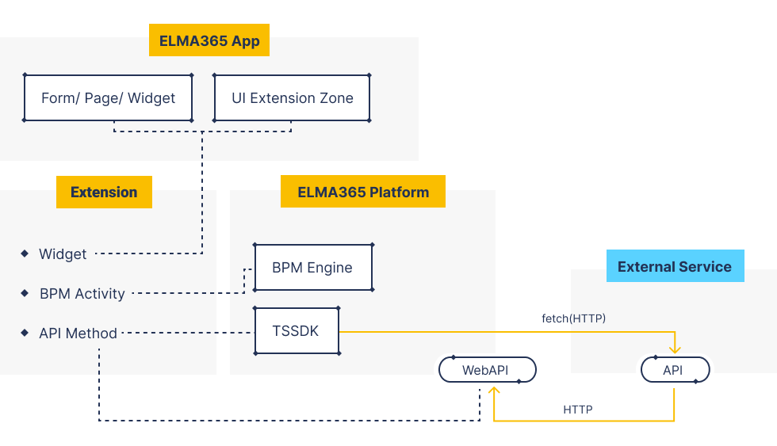

Возможности для гибкой разработки решений
В нашей системе есть множество быстрых и удобных способов реализовать нужную вам задачу с использованием Low Code инструментов. При этом мы гарантируем поддерживаемость и совместимость таких решений в будущих версиях платформы, но такие инструменты всегда будут иметь ограничения.
Вместе с этим, всегда есть решения, требующие сложной и глубокой технической экспертизы, которые просто невозможно реализовать ограниченными средствами разработки в платформе. Мы понимаем это и даем интегрировать любые ваши технические разработки с платформой.
С чего начать разработчику
Зарегистрируйтесь в облаке и изучите возможности системы самостоятельно, а также:
- обратитесь в справку за быстрым стартом и ответами на частые вопросы;
- проанализирйте архитектуру системы;
- ознакомьтесь с гибкими функциональными возможностями скриптов в справке ELMA365 TS SDK;
- изучите возможности интеграции с использованием REST в справке по публичному API ELMA365;
- обратитесь на форум ELMA365 Community для поиска готовых рецептов или ответов у сообщества, просмотрите «Краткое руководство по созданию Low-code решений»;
- изучите процедуры импорта, экспорта и обновления решения.
Полезные знания и умения для разработки решений:
- понимание возможностей Low-code платформы;
- знание языка TypeScript для написания скриптов;
- умение верстать разметку HTML + CSS и использовать сторонние библиотеки на JavaScript;
- понимание основы взаимодействия разных сервисов через HTTP-запросы;
- понимание сервисноориентированной (микросервисной) архитектуры и её особенностей;
- понимание контейнеризации с использованием Docker и базовые навыки работы с Kubernetes для разработки собственных сервисов.
Типовые скрипты создания решений
Интеграция с телефонией
Если для вашего провайдера телефонии еще нет готового решения, то вы можете достаточно быстро реализовать свою интеграцию.
Сделать это можно при помощи пользовательского модуля и скриптов на TypeScript. В силу стандартного подхода к работе с телефонией в платформе в модуле достаточно реализовать всего несколько методов. После этого можно будет настраивать телефонию и использовать её через стандартный интерфейс в платформе.
Интеграция с внешней системой
Например, с 1С или любой другой учетной системой предприятия.
Тут могут быть разные сценарии применения:
- синхронизация в одну сторону (внешняя система — источник данных);
- синхронизация в одну сторону (ELMA365 — источник данных);
- синхронизация в обе стороны;
- разовые синхронизации в рамках выполнения процессов.
Для реализации такой синхронизации следует создать пользовательский модуль с функциями:
- скрипты с обращением к HTTP-методам внешней системы через
fetchдля выборки данных и сохранения этих данных в платформу; - процессы в модуле для запуска скрипта по расписанию и обработки больших массивов данных в цикле;
- обработчики событий для перехвата создания и изменения элементов в платформе и отправки актуальной информации во внешний сервис.
Единая форма оператора (рабочее место)
Например, форма операциониста банка для оформления кредита. На такой форме обычно много полей ввода с динамическим расчетом данных и обращения к внешним системам для дополнительной проверки. Такую форму можно реализовать при помощи пользовательского виджета:
- использовать стандартные элементы дизайнера интерфейсов и скрипты на клиенте для динамики;
- использовать виджет Код для формирования разметки, которая не укладывается в стандартные виджеты;
- добавить обмен данными с внешними системами через скрипты на сервере.
Отчёты
Если нужно сформировать быстрый и простой отчёт для пользователя, то проще всего это сделать пользовательским виджетом. По сути этот скрипт похож на предыдущий, но тут больше внимания уделяется не вводу данных, а их отображению. Для достижения нужного вида можно подключить в виджете Код свои собственные стили и использовать язык JavaScript.
Платформа как источник данных для внешних систем
Может стоять задача использования данных накопленных в ELMA365 для внешней системы формирования отчётности. Например, это может быть умный BI или готовый сервер отчётов. Такие системы часто умеют работать с данными доступными по HTTP‑адресу. Чтобы добавить новый адрес с нужным поведением, достаточно реализовать свой метод API в пользовательском модуле. В таком методе вы можете вернуть любые данные в любом удобном для сервера отчётов формате.
Работа с файлами бинарных или закрытых форматов
Если вам нужно прочитать или создать файл нестандартного бинарного (или закрытого) формата, то сделать это можно при помощи своего микросервиса. В таком сервисе следует реализовать HTTP‑метод, в котором:
- получить всё тело файла (или только идентификатор файла в системе);
- выполнить нужные манипуляции с файлом;
- вернуть тело файла в ответе (или сохранить файл через стандартный API работы с файлами);
- вызвать такой сервис лучше из скриптов модуля, и можно обернуть вызовы в удобные блоки действий в бизнес‑процессах или в виджеты.
Интеграция с другими протоколами (когда нет HTTP)
По аналогии с предыдущей задачей — эта решается созданием отдельного сервиса адаптера. Такой сервис должен уметь транслировать вызовы HTTP‑методов в требуемые протоколы взаимодействия. Например:
- отправка или чтение данных в корпоративной шине данных (MSMQ, RabbitMQ, ActiveMQ и другие);
- взаимодействие с отдельной системой хранения и обработки данных (Oracle, MS SQL и другие).
Составные компоненты для решения задач
В платформе есть три важных компонента для реализации решений любой сложности:
Виджет «Код»
Этот виджет позволяет создавать полностью самостоятельные пользовательские интерфейсы с динамикой и любыми интерфейсными решениями. В виджете создаётся логика при помощи языка JavaScript и разметки HTML с применением языка шаблонов Lodash template. В комбинации с клиентскими и серверными скриптами на TypeScript внутри виджета это даёт большие возможности для создания сложных и гибких решений.
Примеры:
- динамика на форме и интеграция с внешними источниками — например, интеграция с сервисом DaData.
- сложные графики на основе данных приложения через D3.js или другие веб библиотеки.
- сложные шаблоны отображения и работы с элементами приложений в браузере. Доска для планирования, сложный канбан или особая матрица расположения элементов приложений.
- возможность создать полноценное веб‑приложение с использованием любых веб технологий (рабочее место для работы с данными платформы) и положить его как готовый файл .js в пользовательский виджет.
Типовой сценарий использования виджета Код — это создание пользовательского виджета в приложении, разделе или модуле. В этом виджете вы определяете пользовательский контекст (свойства), который будет влиять на поведение вложенного внутрь него виджета Код. Таким образом, вы сможете повторно использовать виджет в разных интерфейсах и менять его поведение настройками.
Модуль
Для решения задач, связанных с расширениями функциональных возможностей системы или реализацией интеграционной логики на сервере мы ввели специальный контейнер — модуль. Модуль предназначен для создания готовых к использованию элементов конфигурации (виджетов, действий бизнес‑процесса). Поэтому модуль, в отличие от раздела, может быть установлен в систему только один раз. В дальнейшем он может обновляться на более новую версию.
С помощью модуля в системе можно:
- расширять стандартные интерфейсы через зоны расширения;
- создавать готовые пользовательские виджеты;
- создавать готовые пользовательские блоки действий для процессов;
- обрабатывать системные события скриптами или процессами;
- обрабатывать произвольный веб запрос (добавляет свои методы Web API).
Модуль может быть разработан и установлен в редакцию On‑Premises без каких‑либо ограничений. Также модуль можно опубликовать в облачный каталог ELMA365 Store после прохождения процедуры модерации.
Примеры:
- интеграция с Диадок — комплексный пакет интеграции с внешней системой;
- реализация провайдера Телефонии;
- реализация провайдера для ЭЦП;
- модуль Аудит безопасности.
Выделенный сервис
Бывают случаи, когда требуется провести интеграцию с внешней системой, при этом возможностей TypeScript недостаточно, и у внешней системы может не быть готового HTTP API.
В этом случае мы рекомендуем разрабатывать отдельный самостоятельный сервис. Между платформой ELMA365 и этим сервисом связь должна идти через публичное Web API платформы и HTTP-методы, созданные в самом сервисе.
Рамки такого решения уже ничем не ограничены, только сложностью решаемой задачи и возможностями разработчиков сервиса. Размещение и поддержка такого сервиса не входит в область поддержки платформы.
Примеры:
- сервис, который обеспечивает работу с legacy системой через низкоуровневый драйвер или закрытый протокол;
- сервис, который содержит внутри подготовленную ML модель для принятия решений;
- сервис, который выполняет сложный анализ и преобразование больших данных;
- сервис, через который внешняя система передает данные в платформу (например в условиях DMZ).
Очень важно понимать, что возможности взаимодействия такого сервиса с платформой ограничены строгостью Web API. Но при этом, можно создать модуль, в котором реализовать собственные методы API и использовать их в сервисе.
Мы считаем, что подход «Задача — Сервис» должен стать традиционным и понятным для всех участников разработки решений.
Так выглядит примерная схема возможностей расширения функциональных возможностей платформы и взаимодействия с ней из внешнего мира:

Процесс разработки решений
Решение для упаковки и переноса
В конфигурации ELMA365 есть такой контейнер, как решение. Он позволяет объединять несколько разделов и модулей в единый пакет для экспорта‑импорта между компаниями.
Этот подход позволяет решать крупные промышленные задачи, создавать реальные бизнес-решения и быстро переносить их между окружениями разработки / тестирования / эксплуатации.
Также полезные пакеты решений могут быть выгружены в ELMA365 Store после модерации вендором.